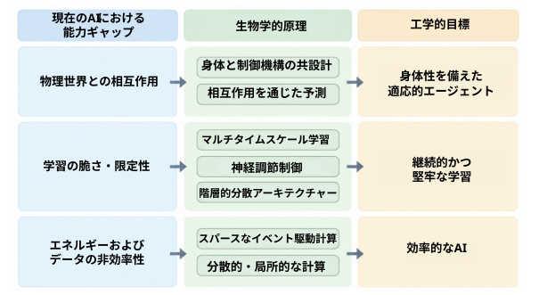
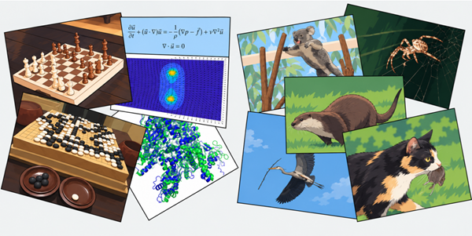

Abstract—Neuroscience and Artificial Intelligence (AI) have made impressive progress in recent years but remain only
loosely interconnected. Based on a workshop convened by the National Science Foundation in August 2025, we identify three
fundamental capability gaps in current AI—the limited ability to interact robustly with the physical world, inadequate learning
that produces brittle systems, and unsustainable energy and data inefficiency—and describe the neuroscience principles that
address each: co-design of body and controller, prediction through interaction, multi-scale learning with neuromodulatory
control, hierarchical distributed architectures, and sparse event-driven computation. We present a research roadmap organized
around these principles at near-, mid-, and long-term horizons. We argue that realizing this program requires a new
generation of researchers trained across the boundary between neuroscience and engineering, and describe the institutional
conditions—interdisciplinary training, hardware access, community standards, and ethics—needed to support them. We
conclude that NeuroAI, neuroscience-informed artificial intelligence, has the potential to overcome limitations of current AI
while deepening our understanding of biological neural computation.
要旨—近年、神経科学と人工知能（AI）は目覚ましい進歩を遂げてきたが、両者の結びつきは依然として限定的である。本稿では、2025年8月に全米科学財団（NSF）が主催したワークショップに基づき、現在のAIにおける3つの根本的な能力上の課題――物理世界と堅牢に相互作用する能力の不足、システムの脆弱性を招く不十分な学習、そして持続不可能かつ非効率なエネルギー消費とデータ利用――を特定する。さらに、これらの課題に対処しうる神経科学の原理として、身体と制御器の共設計、相互作用を通じた予測、神経修飾制御を伴うマルチスケール学習、階層的分散アーキテクチャ、およびスパースなイベント駆動型計算を提示する。また、これらの原理に基づき、短期・中期・長期の視点から研究ロードマップを提案する。この計画を実現するには、神経科学と工学の境界領域で訓練を受けた次世代の研究者が必要であり、彼らを支援するための制度的条件（学際的な教育・訓練、ハードウェアへのアクセス、コミュニティの標準規格、倫理など）について論じる。結論として、神経科学の知見を取り入れた人工知能「NeuroAI」は、現在のAIが抱える限界を克服すると同時に、生物学的神経計算に対する我々の理解を深める可能性を秘めていると主張する。
The major leaps in artificial intelligence (AI) share a common origin: neuroscience. McCulloch and Pitts modeled
the neuron as a logical gate; Rosenblatt turned that model
into a learning machine. Hubel and Wiesel mapped the
hierarchical organization of visual cortex [1]; Fukushima
and later LeCun translated it into convolutional networks
[2, 3, 4]. The attention mechanisms at the core of modern
transformers draw on the cortical principle that processing
resources must be allocated selectively to relevant inputs
[5, 6]. Each of these, and many more, was a specific computational insight extracted from a specific neuroscience
finding, then engineered into an algorithm [7, 8, 9, 10]
[11, 12, 13]. The deep learning revolution descends from
this lineage. We use the term NeuroAI for the bidirectional research program linking neuroscience and artificial
intelligence: studying biological intelligence to extract
computational principles that can advance AI, and using
AI both as a tool for neuroscience and, where appropriate,
as a model for understanding biological intelligence.
人工知能（AI）における大きな飛躍は、いずれも神経科学という共通の源流を持っている。マカロックとピッツはニューロンを論理ゲートとしてモデル化し、ローゼンブラットはそのモデルを学習機械へと発展させた。ヒューベルとヴィーゼルは視覚野の階層構造を明らかにし[1]、福島、そして後にルカンが、それを畳み込みネットワークへと落とし込んだ[2, 3, 4]。現代のトランスフォーマー（Transformer）の核心であるアテンション機構は、「処理リソースは関連性の高い入力に対して選択的に割り当てられるべきである」という大脳皮質の原理に基づいている[5, 6]。これらをはじめとする数々の進歩は、神経科学における特定の知見から計算論的な洞察を抽出し、それをアルゴリズムとして構築したものである[7, 8, 9, 10][11, 12, 13]。ディープラーニングの革命も、こうした系譜に連なるものだ。我々は、神経科学と人工知能を結びつける双方向的な研究プログラムを「NeuroAI」と呼んでいる。これは、生物学的知能を研究してAIの発展に寄与する計算原理を抽出すると同時に、AIを神経科学のためのツールとして、あるいは場合によっては生物学的知能を理解するためのモデルとして活用する取り組みである。
Industry is now investing hundreds of billions of dollars
per year in AI. Frontier models improve rapidly. Large
language models pass professional examinations, write and
debug functional code, generate images and videos from
natural language descriptions, and solve open problems in
mathematics. Some leaders in the field predict artificial
general intelligence within a few years. These achievements
are substantial, and scaling current approaches may well
continue to produce gains.
現在、産業界はAIに対して年間数千億ドルもの投資を行っている。最先端モデルは急速に進化を遂げている。大規模言語モデルは専門職の試験に合格し、実際に機能するコードの作成やデバッグを行い、自然言語による記述から画像や動画を生成し、さらには数学における未解決問題の解法を見出すことさえある。この分野の第一人者の中には、数年以内に汎用人工知能（AGI）が実現すると予測する者もいる。こうした成果は極めて大きなものであり、現在のアプローチをさらに拡張していくことで、今後もさらなる進歩がもたらされる可能性は十分にある。
Nearly all of this investment, however, is concentrated on
a single architectural paradigm: transformers trained on
massive static datasets, running on dense synchronous digital GPU computation. The bet is also conceptually narrow: much of frontier AI is trained and evaluated primarily
through language. However, language represents only one
particular class of intelligent behavior. Nonhuman animals
exhibit sophisticated learning, decision-making, navigation, and control without language, and in humans, the
language network is anatomically dissociable from systems
supporting other cognitive functions [14]. The focus on
language-centric architectures therefore explores only a
restricted part of the space of possible mechanisms that
underwrite intelligent behavior, and may miss capabilities
that benchmarks within the language domain do not reveal. These capabilities include affective modulation of
behavior, unconscious inferences, flashes of insight or cognitive incubation. Many major advances in AI—including
perceptrons, convolutional networks, reinforcement learning, and attention mechanisms—introduced qualitatively
new computational ideas rather than emerging from the
scaling of existing approaches. The question facing the
field now is whether the next generation of architectural
ideas will be ready when the current paradigm reaches its
limits.
しかし、こうした投資のほぼすべては、単一のアーキテクチャ・パラダイムに集中している。すなわち、膨大な静的データセットで学習され、高密度かつ同期的なデジタルGPU演算上で実行される「トランスフォーマー」である。また、そのアプローチは概念的にも狭い。最先端のAIの多くは、主に言語を通じて学習・評価されているからだ。しかし、言語は知的行動の一形態に過ぎない。人間以外の動物は、言語を用いることなく、高度な学習、意思決定、ナビゲーション、制御を行っている。人間においても、言語ネットワークは、他の認知機能を支えるシステムとは解剖学的に独立している[14]。したがって、言語中心のアーキテクチャに焦点を当てることは、知的行動を支えうるメカニズムの可能性のうち、ごく限られた領域を探求しているに過ぎない。そのため、言語領域のベンチマークでは明らかにならないような能力を見落としている可能性がある。そうした能力には、行動に対する情動的な調整、無意識的な推論、突然のひらめき、あるいは認知的な「インキュベーション（熟成）」などが含まれる。AIにおける主要な進歩の多く――パーセプトロン、畳み込みニューラルネットワーク、強化学習、アテンション機構など――は、既存のアプローチを単にスケールアップさせたものではなく、質的に新しい計算上のアイデアを導入したものである。現在、この分野が直面している問いは、現在のパラダイムが限界に達したとき、次世代のアーキテクチャに関するアイデアが準備できているかどうか、という点である。
Three fundamental capability gaps are already visible, and
they are unlikely to close through scaling alone. First, AI
struggles to interact with the physical world: it passes
the bar exam but cannot clear a dinner table and wash
the dishes. Second, AI does not learn the way animals
do—continuously, adaptively, with graceful fallback under
novelty—and this makes it brittle. Third, AI is inefficient
in energy and data to a degree that constrains who can
build it and where it can be deployed. These gaps are
architectural. They reflect deep mismatches between how
current AI systems are designed and how biological intelligence works. They are also the problems that brains
evolved to solve.
すでに3つの根本的な能力の隔たりが明らかになっており、これらは単に規模を拡大するだけでは解消されない可能性が高い。第一に、AIは物理世界と関わることに苦戦している。司法試験には合格できても、食卓を片付けて食器を洗うことはできない。第二に、AIは動物のような学習の仕方――継続的かつ適応的であり、未知の状況に直面しても柔軟に対応できるような学習――を行わないため、脆さを抱えている。第三に、AIはエネルギー効率やデータ効率の面で極めて非効率であり、そのことが、誰がAIを構築できるか、どこにAIを導入できるかという点を制約している。これらの隔たりは、アーキテクチャに起因するものだ。それは、現在のAIシステムの設計と、生物学的な知能の仕組みとの間に存在する、根深い不一致を反映している。これらはまた、生物の脳が進化の過程で解決してきた課題でもある。
Neuroscience is now positioned to address them with a
specificity that was not previously possible. The complete
connectome of the fruit fly brain has been mapped at
synaptic resolution [15, 16]. Large-scale electrophysiology
using Neuropixels probes allows simultaneous recording
from thousands of neurons across multiple brain areas [17].
Optogenetic tools enable causal manipulation of identified
cell types [18]. Comprehensive behavioral tracking links
neural activity to behavior with a precision unavailable a
generation ago. For the first time, we can extract specific
algorithmic insights from biological computation about
how neural circuits achieve robust [19] , efficient, and
adaptive performance.
現在、神経科学は、かつては不可能であった高い特異性をもって、こうした課題に取り組む態勢が整っている。ショウジョウバエの脳については、シナプス解像度で完全なコネクトーム（神経回路網の全接続図）がマッピングされている[15, 16]。また、「ニューロピクセル（Neuropixels）」プローブを用いた大規模な電気生理学的計測により、脳の複数の領域にまたがる数千ものニューロンから同時に記録をとることが可能となった[17]。さらに、オプトジェネティクス（光遺伝学）ツールを用いることで、特定の細胞タイプを因果的に操作することもできる[18]。包括的な行動追跡技術は、神経活動と行動を、一世代前には実現し得なかった精度で結びつけている。私たちは今、生物学的計算の仕組み――神経回路がいかにして堅牢（ロバスト）[19]かつ効率的で、適応的なパフォーマンスを達成しているのか――について、具体的なアルゴリズム上の知見を初めて抽出できるようになっている。
We lay out three promising foundations for the next generation of AI. We describe the three capability gaps in
detail and identify the neuroscience principles that address each one. We present a research roadmap for the
coming decade, organized by concrete milestones. And
we describe the institutional changes, in training, infrastructure, and community organization, needed to realize
this program. The work we describe complements industry’s current efforts, which are focused on optimizing the
present paradigm. The research program we propose here
develops the architectural alternatives that will be needed
next, whether the current paradigm plateaus in three years
or in fifteen. Figure 1 summarizes the argument: it maps
the capability gaps of modern AI onto the neuroscience
principles that address them, and onto the outcomes that
a neuroscience-informed program could deliver.
我々は、次世代AIに向けた有望な3つの基盤を提示する。具体的には、現在のAIにおける3つの能力上のギャップを詳述し、それぞれに対処しうる神経科学の原則を特定する。また、今後10年間にわたる研究ロードマップを、具体的なマイルストーンに沿って構成する。さらに、このプログラムを実現するために必要な、人材育成、インフラ、コミュニティの組織化といった体制面での変革についても論じる。ここで述べる取り組みは、現行のパラダイムの最適化に注力している産業界の現在の活動を補完するものである。我々が提案する研究プログラムは、現行のパラダイムが3年後に頭打ちになろうと15年後にそうならろうと、その次に必要となる代替的なアーキテクチャを構築するものである。図1に、本稿の議論の要旨をまとめた。ここでは、現代のAIにおける能力上のギャップを、それに対処する神経科学の原則、および神経科学の知見を取り入れたプログラムによってもたらされうる成果と関連付けて示している。

Figure 1: Mapping capability gaps to biological
principles and engineering objectives. Each of the
three capability gaps in current AI (left)—physical-world
interaction, brittle and limited learning, and energy and
data inefficiency—is addressed by a set of neuroscience
principles (center): co-design of body and controller and
prediction through interaction; multi-timescale learning,
neuromodulatory control, and hierarchical distributed architecture; and sparse event-driven and distributed, local
computation. Pursuing these principles points toward the
corresponding engineering objectives (right): embodied
adaptive agents, continual and robust learning, and efficient AI.
図1：能力上のギャップを、生物学的原理および工学的目標と関連付ける。現在のAIにおける3つの能力上のギャップ（左）――「物理世界との相互作用」、「脆く限定的な学習」、「エネルギーおよびデータの非効率性」――は、それぞれ神経科学的原理（中央）によって対処される。具体的には、「身体と制御器の協調設計および相互作用を通じた予測」、「多重時間スケールでの学習、神経修飾物質による制御、および階層的分散アーキテクチャ」、「スパース（疎）なイベント駆動型かつ分散的な局所計算」がこれに該当する。これらの原理を追求することは、対応する工学的目標（右）――「身体性を備えた適応的エージェント」、「継続的かつ堅牢な学習」、「効率的なAI」――の実現へとつながる。
This paper emerged from a workshop convened by the
National Science Foundation in August 2025, bringing
together about seventy researchers and program managers
from neuroscience, artificial intelligence, robotics, neuromorphic engineering, and cognitive science [20]. The workshop was organized around five thematic areas—embodied
cognition and computation, language and communication,
robotics, learning in humans and machines, and neuromorphic AI engineering—but the discussions repeatedly converged on a smaller set of cross-cutting principles. We
present those convergences here [21].
本稿は、2025年8月に全米科学財団（NSF）が主催したワークショップから生まれたものである。このワークショップには、神経科学、人工知能、ロボット工学、ニューロモーフィック工学、認知科学の各分野から、約70名の研究者やプログラムマネージャーが集結した[20]。ワークショップは、「身体化された認知と計算」、「言語とコミュニケーション」、「ロボット工学」、「人間と機械における学習」、「ニューロモーフィックAI工学」という5つのテーマ領域を軸に構成されたが、議論を重ねる中で、それらに共通するいくつかの重要な原則へと焦点が収束していった。本稿では、その収束した原則について提示する[21]。
We organize the limitations of current AI into three categories: the limited ability to interact robustly with the
physical world, a mode of learning that is both inflexible
and fragile, and an inefficiency in energy and data that
limits who can build AI and where it can operate. For
each, we describe the capability gap, explain why scaling
current approaches is unlikely to close it, and identify the
neuroscience principles that point toward a solution.
私たちは、現在のAIが抱える限界を3つのカテゴリーに整理します。すなわち、物理世界と堅牢に相互作用する能力の制限、柔軟性に欠け脆弱な学習様式、そしてエネルギーやデータの面での非効率性（これがAIを構築できる主体や、AIが稼働可能な環境を制約しています）です。それぞれのカテゴリーについて、現状の能力の隔たりを明らかにし、既存のアプローチを単に拡張するだけではその隔たりを埋めることが困難である理由を説明した上で、解決のヒントとなる神経科学の原則を提示します。
In 1988, Hans Moravec observed that the tasks humans
find difficult—chess, calculus, logical reasoning—are easy
for computers, while the tasks we find effortless—walking,
catching a ball, recognizing a face across a room—are
extraordinarily hard [22] (Figure 2). Nearly four decades
later, the pattern holds in a new form. AI systems can now
pass medical licensing exams, generate publishable prose,
and write software. But decades into robotics research,
the most capable robot in a typical household is a vacuum puck that bumps into furniture, requires house preparation
and regular rescuing. No existing system can crack an egg,
separate the yolk from the white, and make an omelet in
an unfamiliar kitchen.
1988年、ハンス・モラベックは次のような指摘をした。人間にとって困難な課題――チェス、微積分、論理的推論など――はコンピュータにとっては容易である一方、人間が難なくこなせる課題――歩くこと、飛んできたボールを捕まえること、離れた場所にいる人の顔を見分けることなど――は、コンピュータにとっては極めて困難である、というものだ[22]（図2）。それから40年近くが経過した現在も、この傾向は新たな形で続いている。今日のAIシステムは、医師国家試験に合格したり、出版可能なレベルの文章を作成したり、ソフトウェアを記述したりすることができる。しかし、ロボット工学の研究が何十年も進んだ今なお、一般的な家庭で最も高性能なロボットといえば、家具にぶつかっては立ち往生し、あらかじめ部屋を片付けておく必要があり、頻繁に「救出」してやらなければならない、円盤型の掃除ロボット程度に過ぎない。未知のキッチンで卵を割り、黄身と白身を分け、オムレツを作れるようなシステムは、現時点では存在しないのである。

Figure 2: Moravec’s paradox, updated for modern
AI. AI has made rapid progress on tasks that humans
regard as cognitively demanding—including games, mathematics, language, and scientific prediction—while remaining comparatively weak at the real-time sensing, control,
and physical interaction that animals perform routinely.
This contrast motivates the search for computational principles underlying embodied biological intelligence.
図2：現代のAIに合わせて更新された「モラベックのパラドックス」。AIは、ゲーム、数学、言語、科学的予測など、人間が高度な認知能力を要するとみなす課題において急速な進歩を遂げてきた。その一方で、動物が日常的に行っているリアルタイムの感覚認識、制御、物理的な相互作用といった能力については、依然として比較的弱い。
こうした対照的な状況が、身体性を持つ生物学的知能の根底にある計算原理を探求する動機となっている。
The reason is that physical interaction with the world
poses a different kind of computational problem from
the ones current AI is optimized for. Real-world action
requires continuous control in real time, with noisy and
partial sensor data, physical consequences for errors, and
no option to reset. The agent must handle objects it has
never seen, surfaces with unknown friction, forces it did not
expect. These are the conditions under which biological
intelligence evolved, and every animal on earth—from
insects navigating turbulent air to octopuses manipulating
objects with eight flexible arms—solves them routinely.
その理由は、現実世界における物理的な相互作用が、現在のAIが最適化されているものとは異なる種類の計算問題をもたらすからである。現実世界での行動には、リアルタイムでの継続的な制御が求められる。そこでは、ノイズを含んだ不完全なセンサーデータしか得られず、誤った行動をとれば物理的な結果（失敗や損害）を招くことになり、やり直し（リセット）もきかない。エージェントは、これまで見たことのない物体や、摩擦係数が未知の表面、さらには予期せぬ力に対処しなければならない。これこそが、生物の知能が進化してきた環境条件であり、地球上のあらゆる動物――乱気流の中を移動する昆虫から、8本の柔軟な腕で物体を操るタコに至るまで――は、こうした課題を日常的に解決しているのである。
Current AI systems are trained on static datasets: text,
images, video. They observe the world passively, through
data collected and curated by others. Reinforcementlearning agents are a partial exception: systems such as
deep Q-networks and AlphaZero build representations
through their own interaction with a virtual environment
rather than from a fixed corpus [23, 24]. The dominant
paradigm behind today’s largest models nonetheless still
learns from static data, and even interactive agents are
typically confined to simulators or games rather than the
open physical world. Whatever internal representations
large language models (LLMs) develop from this passive
exposure, those representations were not built through
the agent’s own causal interaction with physical reality. A
child learning the word “heavy” has spent months picking
things up before encountering the word. The meaning is
anchored in proprioceptive and tactile experience, and is
augmented by auditory experience when the object falls.
An LLM’s representation of “heavy” is anchored in the
co-occurrence statistics of text.
現在のAIシステムは、テキスト、画像、動画といった静的なデータセットを用いて学習されている。これらは、他者が収集・整理したデータを通じて、受動的に世界を観察しているに過ぎない。強化学習エージェントは、これとは多少異なる。例えば、ディープQネットワーク（DQN）やAlphaZeroのようなシステムは、固定されたデータ群からではなく、仮想環境との自律的な相互作用を通じて内部表現を構築する[23, 24]。とはいえ、今日の大規模モデルの主流となっているパラダイムは、依然として静的なデータから学習するものであり、相互作用を行うエージェントでさえ、その活動範囲はシミュレーターやゲームの中に限定されていることがほとんどで、現実の物理世界にまでは及んでいない。大規模言語モデル（LLM）が、こうした受動的なデータ曝露を通じてどのような内部表現を獲得したとしても、それはエージェント自身が物理的現実に対して因果的な相互作用を行う中で構築されたものではない。例えば、子供が「重い」という言葉を学ぶ過程を考えてみよう。子供は、その言葉に出会うまでの数ヶ月間、実際にさまざまな物を持ち上げるという経験を積み重ねている。その意味は、固有受容感覚や触覚といった身体的経験に根ざしており、物が落下した際の聴覚的経験によってさらに補強される。一方、LLMにおける「重い」という概念の表現は、テキスト内における単語の共起統計に基づいているのである。
Neuroscience offers two relevant constructive principles.
The first is co-design of body and controller. Biological
brain architectures did not evolve in isolation. They coevolved with the bodies they control, producing tight
coupling between morphology and neural circuitry [25]. A
fly’s visual system is tuned to the optic flow statistics generated by its particular flight dynamics. An owl’s auditory
processing is calibrated to the interaural time differences
produced by its head geometry. The computational problems the brain solves are shaped by the body it inhabits
[26].
神経科学は、関連する二つの構成原理を提示している。
第一は、身体と制御機構の「共設計（co-design）」である。生物の脳の構造は、孤立して進化したわけではない。それは、自らが制御する身体と共進化を遂げてきたものであり、その結果、形態と神経回路の間に緊密な結合が生まれている[25]。ハエの視覚系は、その個体特有の飛行ダイナミクスによって生じるオプティックフロー（視覚的流動）の統計的特性に合わせて調整されている。フクロウの聴覚処理は、頭部の形状によって生じる両耳間の時間差に合わせて最適化されている。脳が解決すべき計算上の課題は、その脳が宿る身体によって形作られているのである[26]。
This co-evolution has concrete engineering consequences.
Clever body design offloads computation from the neural
controller. Tendon-driven limbs exploit passive dynamics—
springs and dampers in the musculoskeletal system—to
store and release energy during locomotion, reducing the
demands on the nervous system. A human fingertip contains roughly 240 mechanoreceptors per square centimeter, providing dense information about texture, pressure,
slip, and vibration [27]. This massive peripheral sensing, integrated with proprioception and vision through
tightly coupled neural circuits, is what makes human manipulation so adaptive. The retina illustrates the same
principle at a different scale: rather than transmitting
raw images, it performs edge detection, motion detection,
contrast normalization, and prediction of upcoming stimuli, compressing its output by orders of magnitude before
it reaches the brain. Neuromorphic sensors, particularly
dynamic vision sensors that encode brightness changes
asynchronously rather than capturing static frames, represent an important engineered step toward this biological
strategy. The next step is to combine (as in biology) these
transients with the sustained signals in frames to emulate
the computations performed by the retina and early visual
cortex, enabling efficient algorithms and, ultimately, hardware implementations that provide biologically grounded
primitives on which higher-level processes can build.
こうした共進化は、工学的な側面において具体的な帰結をもたらす。巧みな身体設計は、神経制御系が担うべき計算負荷を軽減する。腱駆動型の四肢は、筋骨格系に備わるバネやダンパーといった受動的ダイナミクスを活用して、移動時にエネルギーを蓄えたり放出したりすることで、神経系への要求を低減させている。人間の指先には1平方センチメートルあたり約240個の機械受容器が存在し、質感、圧力、滑り、振動に関する濃密な情報を提供している[27]。こうした末梢における膨大なセンシングが、固有感覚や視覚と密接に結合した神経回路を通じて統合されることで、人間の操作能力は極めて適応性の高いものとなっている。網膜もまた、異なるスケールで同様の原理を体現している。網膜は、生の画像をそのまま伝送するのではなく、エッジ検出、動きの検出、コントラストの正規化、そして将来の刺激の予測といった処理を行い、情報を大幅に圧縮した上で脳へと送る。ニューロモーフィック・センサー、とりわけ静止画フレームを撮影するのではなく、明るさの変化を非同期的に符号化する「ダイナミック・ビジョン・センサー」は、こうした生物学的戦略に倣った重要な工学的アプローチである。次の段階は、（生物における仕組みと同様に）こうした変化情報と、フレーム形式の持続的な信号を組み合わせることである。これにより、網膜や初期視覚野で行われている計算を模倣することが可能となり、効率的なアルゴリズムや、さらには生物学的な基盤に基づく「プリミティブ（基本要素）」を提供するハードウェアの実装へとつながる。こうしたプリミティブの上に、より高次の処理プロセスを構築できるようになるのである。
The physical structure of the body shapes the control
problems it must solve. The soft arms and suckers of
the octopus are part of its solution for handling complex
materials; more generally, embodied intelligence offloads
part of the control problem onto the periphery. The size
and speed of a behavior alter the relevant dynamics, and
biological nervous systems adjust their control strategies
accordingly [28].
身体の物理的構造は、その身体が解決すべき制御課題のあり方を規定する。タコの柔軟な腕や吸盤は、複雑な対象を扱うための解決策の一部である。より一般的に言えば、「身体化された知能（embodied intelligence）」は、制御課題の一部を身体の末梢部へと委ねるものである。行動の規模や速度は、それに関わる力学的な動態を変化させるが、生物の神経系はそれに応じて制御戦略を調整する[28]。
Modern robots violate the co-design principle almost entirely. Most are rigid, over-actuated, and energy-inefficient,
designed this way because rigid bodies are simpler to
model mathematically. The control system and the physical hardware are typically designed by separate teams
with separate objectives. The result is machines capable
of precise repetitive motions in controlled environments
but poor at adapting to novel objects, surfaces, or forces.
現代のロボットは、「共設計（コ・デザイン）」の原則にほとんど完全に背いている。その多くは剛体で、過剰な数のアクチュエータを備え、エネルギー効率も悪い。こうした設計になっているのは、剛体の方が数学的なモデル化が容易だからである。制御システムと物理的なハードウェアは、通常、それぞれ異なる目標を掲げた別々のチームによって設計される。その結果、制御された環境下で正確な反復動作を行うことはできても、未知の物体や表面、あるいは予期せぬ力に対して適応する能力に欠ける機械となってしまっている。
The second principle is prediction through interaction. The
brain is organized around prediction at every level of the
sensory hierarchy. Retinal ganglion cells respond most
strongly when the visual scene violates their expectations,
transmitting prediction errors rather than raw data [29].
Predictive coding models [30, 31] propose that each level
of the cortical hierarchy maintains a generative model of
its inputs, passing only the discrepancies upward. It has
primary roots in the retina and visual cortex [32, 33, 34];
it is an influential framework, but it remains debated,
and the direct neurophysiological evidence for it is still
contested [35]. If this framework is approximately correct,
the brain’s primary computational strategy is to predict
the next state of the world conditioned on its own actions,
and to learn by correcting those predictions. Such brainlike predictive coding can be efficient on neuromorphic
hardware, and can be applied to solve real world problems
[36].
第二の原則は、相互作用を通じた予測である。脳は、感覚階層のあらゆるレベルにおいて、予測を中心として構成されている。網膜神経節細胞は、視覚的場面が自身の予測から外れたときに最も強く反応し、生のデータではなく「予測誤差」を伝達する[29]。予測符号化モデル[30, 31]では、大脳皮質の階層における各レベルが、自身の入力に対する生成モデルを保持しており、その入力と予測との間の不一致のみを上位層へと伝達すると考えられている。この考え方は網膜や視覚皮質にその根源を持つ[32, 33, 34]。これは影響力のある枠組みであるが、依然として議論の対象となっており、それを裏付ける直接的な神経生理学的証拠についても異論がある[35]。もしこの枠組みがおおむね正しいとすれば、脳の主要な計算戦略は、自身の行動を条件として世界の次の状態を予測し、その予測を修正することで学習を行うことだと言える。このような脳型の予測符号化は、ニューロモーフィック・ハードウェア上で効率的に機能し、現実世界の課題を解決するために応用可能である[36]。
This has direct implications for how AI systems should
be trained. Infants learn in a developmental sequence:
first building representations through passive observation,
then learning cause and effect by incorporating their own
actions as motor control matures, then constructing causal
models through active experimentation. This progression—
from passive prediction to action-conditioned prediction to
causal reasoning—suggests a natural curriculum for training embodied AI agents, and aligns with current proposals
like LeCun’s Joint Embedding Predictive Architecture
[37], which learns by predicting future states in abstract
representation space rather than in pixel or token space.
これは、AIシステムをどのように学習させるべきかという点に直接的な示唆を与える。乳児は発達の過程を経て学習する。まず受動的な観察を通じて表現を構築し、次に運動制御が成熟するにつれて自身の行動を組み込むことで因果関係を学び、さらに能動的な実験を通じて因果モデルを構築していく。このような「受動的な予測」から「行動を条件とした予測」、そして「因果推論」へと至る段階的なプロセスは、身体性を持つAIエージェントを学習させるための自然なカリキュラムを示唆している。また、これはルカン（LeCun）が提案する「結合埋め込み予測アーキテクチャ（Joint Embedding Predictive Architecture）」[37]のような現在のアプローチとも合致する。この手法は、画素やトークンの空間ではなく、抽象的な表現空間において将来の状態を予測することで学習を行うものである。
Physical robots are essential to this program. They are
not just consumers of NeuroAI principles; they generate
the questions that sharpen them. Building a robot forces
precise definitions of otherwise vague concepts. When a
neural architecture designed for one body plan is applied
to a robot with a fundamentally different morphology, the
resulting failures expose assumptions about brain-body
coupling that purely computational work leaves untested.
Robots reproduce the actual operating conditions of biological intelligence—partial data, continuous control, sparse
reward, real consequences—in ways that curated benchmarks cannot.
このプログラムにおいて、物理的なロボットは不可欠です。ロボットは単にニューロAIの原理を利用するだけでなく、それらをより洗練させるための疑問を生み出します。ロボットを構築することで、曖昧な概念を明確に定義する必要が生じます。ある身体構造向けに設計されたニューラルアーキテクチャを、根本的に異なる形態を持つロボットに適用すると、結果として生じる不具合によって、純粋な計算作業では検証されない脳と身体の結合に関する前提が明らかになります。ロボットは、厳選されたベンチマークでは再現できない方法で、生物学的知能の実際の動作条件（部分的なデータ、継続的な制御、限られた報酬、現実的な結果）を再現します。
Interacting with the physical world includes interacting
with others, be they humans or machines. Current LLMs
can generate empathic-sounding language, but their subsequent actions do not always reflect the concern or values
expressed in those words, sometimes with harmful consequences [38]. Interestingly, recent work suggests that
LLMs may be spontaneously evolving internal representations of some emotions [39] . Humans may be fooled into
thinking the chatbot cares for them, when in fact it does
not. AI systems do not have a genuine sense of values, or
of right and wrong. They currently do not have artificial
emotions; the functional equivalent of human or animal
emotions. Yet such emotions serve many computational
purposes including providing feedback that drives learning
[40]. A dog trained by a scolding tone modifies its behavior; a presenter corrected in public feels embarrassment
and avoids the same mistake. Current LLMs apologize
graciously when told they are wrong, but cannot use the
emotional consequences of their errors as a learning signal
to improve.
物理世界との関わりには、人間であれ機械であれ、他者との相互作用が含まれる。現在の大規模言語モデル（LLM）は、共感的とも受け取れる言葉を生成できるが、その後の行動が、言葉に表れた配慮や価値観を常に反映しているとは限らない。それどころか、時に有害な結果を招くことさえある[38]。興味深いことに、近年の研究からは、LLMが特定の感情に対応する内部表現を自発的に形成しつつある可能性が示唆されている[39]。人間は、チャットボットが自分を気にかけてくれていると勘違いしてしまうかもしれないが、実際にはそのようなことはない。AIシステムには、真の価値観や、善悪の判断基準は備わっていない。現時点では、人間や動物の感情と機能的に同等な「人工的な感情」も持っていないのである。しかし、こうした感情は、学習を促進するためのフィードバックを提供するなど、計算上の多くの目的を果たしている[40]。例えば、叱責するような口調で訓練された犬は行動を修正するし、人前で間違いを指摘されたプレゼンターは恥ずかしさを感じ、同じ過ちを繰り返さないようにする。現在の大規模言語モデルは、誤りを指摘されると丁寧に謝罪することはできるが、自らの過ちに伴う感情的な結果を、改善のための学習シグナルとして活用することはできない。
Most deployed AI systems do not learn from experience
after training ends, despite active efforts in the continuallearning literature that seeks to close this gap [41, 42]. A
physician improves with every patient seen. A factory
worker notices when a machine starts sounding different
and adjusts. A self-driving car that encounters an unusual
intersection only learns from it when the fleet data is
consolidated and redeployed . A medical imaging classifier
trained at one hospital degrades when deployed at another,
where the scanners, patient demographics, and imaging
protocols differ, and it cannot self-correct. The model is
generally frozen the moment training ends. Whatever it
knew at that point is all it will ever know, until a successor
model is retrained.
現在運用されているAIシステムの多くは、学習終了後に経験から学ぶことはない。このギャップを埋めようとする「継続学習（continual learning）」の分野で活発な研究が行われているにもかかわらず、現状はそうなっている[41, 42]。医師は患者を診るたびに経験を積み、スキルを向上させる。工場の作業員は、機械の動作音がいつもと違うことに気づけば、それに応じて調整を行う。一方、自動運転車がこれまで経験したことのないような特殊な交差点に遭遇しても、その経験から即座に学ぶことはない。学習データが統合され、モデルが再デプロイされて初めて、その経験が反映されるのである。また、ある病院で学習させた医療画像分類モデルを別の病院に導入すると、性能が低下することがある。これは、スキャナーの機種、患者の属性、撮影プロトコルなどが異なるためだが、モデルが自律的に修正を行うことはできない。一般に、AIモデルは学習が終了した時点で「固定」されてしまう。つまり、後継モデルが改めて学習されるまで、その時点までに獲得した知識がすべてであり、それ以上のことを学ぶことはないのだ。
A related failure is that current systems do not represent
what they do not know. Hallucinations—the confident
generation of false or fabricated information—are the most
visible symptom. When an LLM’s training data is sparse
or contradictory on a topic, the system produces fluent
confabulation with no internal signal that anything is
wrong. A human who has never done plumbing knows
they don’t know plumbing. Current AI has no comparable
self-model of its own competence boundaries, or of its
confidence level in its answers, because it has no episodic
record of what it has and has not experienced and no
grounded world model against which to check its outputs.
関連する欠陥として、現在のシステムには「自分が何を知らないか」を表現する能力がないという点が挙げられる。その最も顕著な現れが「ハルシネーション（幻覚）」、すなわち誤った情報や作り話を、さも確信に満ちた様子で生成してしまう現象である。あるトピックに関して、大規模言語モデル（LLM）の学習データが不足していたり、矛盾を含んでいたりする場合、システムは流暢な「でっち上げ」を行う。しかも、その内容に誤りがあることを示すような内部的なシグナルは一切存在しない。例えば、配管工事の経験がない人間であれば、自分にはその知識がないことを自覚できる。しかし、現在のAIには、自身の能力の限界や、回答に対する確信の度合いを把握するための「自己モデル」が存在しない。なぜなら、AIには自身が何を経験し、何を経験していないかというエピソード的な記録がなく、また、自身の出力を照らし合わせて検証するための、現実世界に根ざしたモデルも備わっていないからである。
Within the domain of language, frontier LLMs have become impressively robust. They handle paraphrased questions, ambiguous prompts, and unusual formatting with
a fluency that would have seemed impossible five years
ago. The same is becoming true of image or audio generation. Outside these domains, the picture is different.
Self-driving systems still fail at edge cases with fatal consequences. Robotic manipulation breaks when objects
differ modestly from training examples. Industrial monitoring systems degrade when manufacturing conditions
drift. These are domains where the system encounters the
world as it actually is, rather than as a curated dataset
represents it.
言語の領域において、最先端の大規模言語モデル（LLM）は驚くほど堅牢になっている。言い換えられた質問や曖昧なプロンプト、あるいは特殊な形式の入力に対しても、5年前であれば不可能と思われたほどの流暢さで対応できる。画像や音声の生成においても、同様の状況になりつつある。しかし、こうした領域の外に目を向けると、状況は一変する。自動運転システムは、想定外の特殊な状況（エッジケース）に直面すると、致命的な結果を招くような失敗を依然として起こす。ロボットによる操作は、対象物が学習データに含まれる例とわずかに異なるだけで、うまく機能しなくなる。産業用監視システムは、製造条件が変化すると性能が低下してしまう。これらは、システムが「精選されたデータセットによって表現された世界」ではなく、「ありのままの現実世界」と向き合うことになる領域なのである。
The field has recognized the problem posed by the lack
of an episodic memory and responded with engineering
workarounds. Elaborate human-engineered prompt injections and retrieval-augmented generation (RAG) gives
models access to external documents at inference time.
Context windows have grown from thousands to millions
of tokens. Tool use lets models query databases and APIs.
Fine-tuning adapts models to new domains. These help,
but they are workarounds for an architectural gap, not solutions to it. RAG retrieves documents but does not change
what the model knows in the long run. A longer context
window is still a fixed buffer, wiped between sessions. Finetuning can degrade previously learned knowledge and is
typically performed offline rather than continuously. None
of these approaches give the system the ability to update
its internal model of the world in response to ongoing
experience. They simulate memory without implementing
learning.
この分野では、エピソード記憶の欠如がもたらす問題が認識されており、工学的な代替手段（ワークアラウンド）によって対処が試みられてきた。人間が精巧に設計したプロンプトインジェクションや、検索拡張生成（RAG）は、推論時にモデルが外部文書を参照できるようにするものである。コンテキストウィンドウは、数千トークンから数百万トークンへと拡大した。ツール利用（Tool use）によって、モデルはデータベースやAPIに問い合わせを行うことが可能になった。また、ファインチューニングは、モデルを新しいドメインに適応させるために用いられる。これらは有用ではあるものの、あくまでアーキテクチャ上の欠落に対する代替手段に過ぎず、根本的な解決策ではない。RAGは文書を検索することはできるが、モデルが長期的に保持する知識そのものを変えるわけではない。コンテキストウィンドウの拡大も、結局は固定されたバッファに過ぎず、セッションが終了すれば情報は消去されてしまう。ファインチューニングは、既存の知識を損なう可能性があり、通常は継続的ではなくオフラインで実行される。これらの手法のいずれも、システムが日々の経験を通じて、自身の内部的な世界モデルを更新する能力を与えるものではない。つまり、これらは「学習」を実装することなく、「記憶」をシミュレートしているに過ぎないのである。
These failures, the inability to learn after deployment,
the absence of calibrated uncertainty, the brittleness in
physical domains, the silent degradation, share a common architectural root: current AI has no mechanism
for continual, multi-timescale learning and no hierarchical
organization that separates fast safe responses from slow
flexible ones. There is no hierarchical organization separating detailed from ‘gist’ memory. Neuroscience offers
specific principles for addressing both [43] [11].
こうした失敗――デプロイ後に学習できないこと、不確実性を適切に評価できないこと、物理的領域における脆さ、そして静かに進行する性能劣化――には、共通するアーキテクチャ上の根源がある。現在のAIには、継続的かつ複数の時間スケールにわたる学習を行うメカニズムが存在せず、また、迅速で安全な応答と、緩やかだが柔軟な応答を切り分けるような階層的構成も備わっていない。詳細な記憶と「要点」を捉えた記憶を分離するような階層的構成も欠如している。神経科学は、これら双方の課題に対処するための具体的な指針を提示している [43] [11]。
Multiple memory systems operating at different
timescales. Biological learning spans a continuous spectrum: sensory habituation in seconds, motor adaptation
over minutes to hours, episodic and semantic memory
consolidation over days to years, evolutionary shaping of
neural architecture over millennia. Each timescale serves
a distinct function, and the interaction between them is
what produces both adaptability and stability. Long-term
working memory used during cognitive processing lasts for
hours but only salient and attended events are retained in
long-term memory [44]. The hippocampus learns rapidly,
forming sparse, pattern-separated representations of individual episodes within one or a few exposures [45]. The
neocortex learns slowly, integrating across many episodes
to extract statistical regularities. Sleep-based replay of
hippocampal activity transfers memories to cortical representations gradually, enabling fast learning and stable longterm memory to coexist because they are implemented
in separate but communicating structures [46, 47]. Sleep
allows for selective forgetting of likely useless information and for the consolidation of likely important memory
episodes and facts. Both are important components of
continuous lifelong learning. This is the core insight of
complementary learning systems theory [48, 49], and it
provides an architectural solution to the stability-plasticity
dilemma that plagues all current approaches to continual
learning in AI.
異なる時間スケールで機能する複数の記憶システム 生物学的学習は連続的なスペクトルを成している。数秒で生じる感覚的慣れから、数分から数時間かけて起こる運動適応、数日から数年を要するエピソード記憶や意味記憶の固定化、そして数千年という時間をかけて神経構造を形作る進化的なプロセスまで、その範囲は多岐にわたる。それぞれの時間スケールは固有の機能を担っており、それらの相互作用こそが、適応性と安定性の両立をもたらしている。認知処理の過程で用いられる長期的なワーキングメモリは数時間にわたって持続するが、長期記憶として保持されるのは、その中でも特に際立っており、注意が向けられた出来事だけである[44]。海馬は学習が非常に速く、1回あるいは数回の経験から、個々のエピソードを疎（スパース）かつパターン分離された表現として形成する[45]。一方、新皮質は学習が緩やかであり、多数のエピソードを統合することで統計的な規則性を抽出する。睡眠中には海馬の活動が再演（リプレイ）されることで、記憶が徐々に皮質の表現へと転送される。記憶の形成と保持が、互いに通信しつつも独立した構造で行われるため、高速な学習と安定した長期記憶の両立が可能となるのである[46, 47]。睡眠は、おそらく不要であろう情報を選択的に忘却させると同時に、重要と思われるエピソード記憶や事実を固定化する役割を果たす。これらはいずれも、生涯にわたって続く学習において重要な要素である。これは「相補的学習システム理論（complementary learning systems theory）」の核心的な洞察であり[48, 49]、AIにおける継続学習のあらゆるアプローチが直面している「安定性と可塑性のジレンマ」に対して、構造的な解決策を提示するものである。
Neuromodulatory systems add context-sensitive control
over this architecture. Dopaminergic neurons broadcast
reward prediction error signals that gate plasticity in
the striatum and prefrontal cortex [50], though recent
work shows that these signals are more heterogeneous
and region-specific than a single scalar prediction error
[51, 52]. Noradrenergic neurons in the locus coeruleus
signal arousal and novelty, shifting the balance between
exploiting known strategies and exploring alternatives [53].
Acetylcholine modulates the timing and gating of synaptic
plasticity in cortex and hippocampus, shaping attention,
encoding, and memory consolidation [54]. These neuromodulatory signals interact in ways that we are only beginning to understand [55]. These signals specify whether to
learn and how much, operating differentially across brain
regions and synaptic populations, with a nuance that current optimization algorithms do not approach [56][57, 58].
These neuroscience-inspired ideas have become concrete
in modern reinforcement learning: dopamine has been
reinterpreted through distributional codes for value [59],
prefrontal cortex through meta-reinforcement learning
[60], and hippocampal codes through the successor representation [61]. The spectrum of synaptic timescales
provides a further dimension: some synapses change in
seconds through short-term facilitation and depression,
others require minutes of sustained activity, still others
change only after hours of protein-synthesis-dependent
consolidation. Fast synapses capture immediate statistical structure; slow synapses accumulate evidence and
resist transient fluctuations. “Fast weights,” transient
synaptic modifications that store recent context in associative memory, provide a neurally plausible mechanism
for algorithmic features such as the context window in
a transformer [44][62], but one that emerges from synaptic dynamics and could be implemented in neuromorphic
hardware. Beyond weight changes, structural plasticity,
apoptosis, and adult neurogenesis modify the network’s
topology over time, expanding representational capacity
in a way that has no analogue in current deep learning,
where architecture is fixed at initialization.
神経調節系は、このアーキテクチャに対して文脈に応じた制御を加える。ドーパミン作動性ニューロンは「報酬予測誤差」信号を広範に伝達し、線条体や前頭前皮質における可塑性を制御（ゲート）する[50]。ただし近年の研究では、これらの信号は単一のスカラー値としての予測誤差よりも多様であり、脳領域ごとに特異的であることが示されている[51, 52]。青斑核のノルアドレナリン作動性ニューロンは覚醒や新規性をシグナルとして伝え、既知の戦略の活用（exploitation）と代替案の探索（exploration）の間のバランスを調整する[53]。アセチルコリンは、皮質や海馬におけるシナプス可塑性のタイミングとゲート制御を調節し、注意、情報の符号化、記憶の固定化を形作る[54]。こうした神経調節信号は相互に作用し合っているが、その仕組みについては、ようやく理解が始まった段階である[55]。これらの信号は、学習を行うべきかどうか、またどの程度学習すべきかを決定する。その作用は脳領域やシナプス集団ごとに異なり、現在の最適化アルゴリズムには見られないような繊細なニュアンスを含んでいる[56][57, 58]。
神経科学から着想を得たこれらの概念は、現代の強化学習において具体的な形となっている。例えば、ドーパミンは価値の「分布符号化（distributional codes）」という観点から再解釈され[59]、前頭前皮質は「メタ強化学習」として捉えられ[60]、海馬の符号化様式は「サクセサー・レプレゼンテーション（後継表現）」としてモデル化されている[61]。シナプスにおける時間スケールの多様性も、重要な側面である。短期的促進や抑制によって数秒で変化するシナプスもあれば、数分間にわたる持続的な活動を必要とするもの、さらにはタンパク質合成を伴う固定化を経て数時間後にようやく変化するものもある。高速なシナプスは即時的な統計構造を捉える一方、低速なシナプスは証拠を蓄積し、一時的な変動に対して安定性を保つ。「高速重み（fast weights）」――すなわち、直近の文脈を連想記憶として保持する一時的なシナプス変化――は、Transformerにおける「コンテキストウィンドウ」のようなアルゴリズム上の機能を、神経科学的に妥当なメカニズムとして実現するものである。これはシナプス動態から生じるものであり、ニューロモーフィック・ハードウェアに実装可能である。さらに、重みの変化だけでなく、構造的可塑性、アポトーシス（細胞死）、成体における神経新生といったプロセスが、時間の経過とともにネットワークのトポロジーを変化させる。これにより表現能力が拡張されるが、これは初期化時にアーキテクチャが固定される現在のディープラーニングには存在しない特性である。
Hierarchical fallback architecture. Robustness in biological systems arises from layered, distributed control.
The brain’s motor system is a stack of specialized layers
operating at different timescales: the spinal cord mediates
reflexes in milliseconds, the cerebellum calibrates movements over seconds to minutes, the basal ganglia select
among competing action plans, and the motor cortex and
prefrontal cortex handle planning over longer horizons.
Each layer occupies a distinct neural structure with its
own learning rules and network dynamics.
階層的なフォールバック（代替機能）アーキテクチャ 生物学的システムにおける堅牢性は、層状かつ分散的な制御から生じる。
脳の運動システムは、それぞれ異なる時間スケールで機能する、特化した層が積み重なった構造になっている。脊髄はミリ秒単位で反射を仲介し、小脳は数秒から数分かけて運動を調整し、大脳基底核は競合する行動計画の中から一つを選択する。そして、運動皮質や前頭前野は、より長い時間軸にわたる計画を担う。
各層はそれぞれ独自の神経構造を占めており、独自の学習規則とネットワークダイナミクスを備えている。
The vestibulo-ocular reflex (VOR) illustrates how these
layers interact. The VOR stabilizes gaze during head
movements with a latency of about 10 milliseconds, far
too fast for cortical involvement. When the reflex gain
becomes incorrect (as when someone starts wearing new
glasses), the cerebellum detects the resulting retinal slip
and slowly recalibrates over hours to days; once the new
gain is learned, it is transferred to the vestibular nucleus for
fast execution, freeing the cerebellum for new calibration
tasks [63]. The general motif is slow adaptation followed
by fast deployment: invest time in learning, then execute
what has been learned with minimal latency.
前庭動眼反射（VOR）は、こうした層がどのように相互作用するかを示す好例である。VORは頭部の動きに合わせて視線を安定させるが、その反応潜時は約10ミリ秒であり、大脳皮質が関与するにはあまりに短すぎる。反射のゲインが不適切になった場合（新しい眼鏡をかけ始めたときなど）、小脳がそれによって生じる網膜上の像のずれ（網膜スリップ）を検知し、数時間から数日かけてゆっくりと再調整を行う。新たなゲインが学習されると、それは前庭神経核へと転送されて迅速に実行されるようになる。これにより、小脳は再び別の調整タスクに取り組めるようになる[63]。ここに見られる一般的なパターンは、「ゆっくりとした適応」の後に「迅速な実行」が続くというものである。すなわち、学習に時間を費やし、その後、学習した内容を最小限の遅延で実行するということである。
John Doyle’s framework of layered control architectures
provides mathematical grounding for why this pattern
produces robustness [64]. The idea that robust behavior
can emerge from layered controllers has deep roots in
robotics, going back to Brooks’s subsumption architecture
[65]. Architectures with hard constraints at lower levels—
what Doyle calls “constraints that deconstrain”—are the
established path to reliable performance under uncertainty.
Spinal reflexes enforce safety constraints (withdrawal from
pain, postural correction) that free the cortex to plan
without attending to moment-by-moment stability. Distributed control extends this principle throughout the
motor system. Sensorimotor feedback loops operate at
every level of the hierarchy, with local controllers handling tasks like joint compliance and reflex coordination
that centralized robotic systems must compute explicitly.
Higher levels coordinate and set goals rather than micromanaging execution. Recent advances in system-level
synthesis have made it possible to formally analyze such
distributed controllers with the sparse signals, time delays, and local feedback characteristic of biological motor
control, providing quantitative tools for designing systems that are simultaneously distributed, adaptive, and
provably safe.
ジョン・ドイル（John Doyle）による階層型制御アーキテクチャの枠組みは、なぜこのパターンが堅牢性（ロバストネス）をもたらすのかについて、数学的な根拠を与えている[64]。階層化された制御器から堅牢な振る舞いが創発しうるという考え方は、ロボット工学において深いルーツを持っており、ブルックス（Brooks）のサブサンプション・アーキテクチャ[65]にまで遡ることができる。下位レベルに厳格な制約を設けるアーキテクチャ――ドイルが「制約を解除する制約（constraints that deconstrain）」と呼ぶもの――は、不確実な環境下で信頼性の高い性能を実現するための確立された手法である。脊髄反射は安全に関する制約（痛みからの回避や姿勢の修正など）を強制するものであり、これにより大脳皮質は、刻々と変化する安定性の維持に煩わされることなく、計画立案に専念できるようになる。分散制御は、この原則を運動システム全体に拡張するものである。感覚運動フィードバックループは階層のあらゆるレベルで機能しており、関節のコンプライアンス（柔軟性）や反射の調整といったタスクを局所的な制御器が担う。これらは、中央集権的なロボットシステムであれば明示的に計算しなければならないようなタスクである。上位レベルは、実行の細部を管理するのではなく、調整を行い、目標を設定する役割を担う。近年のシステムレベルの統合に関する進展により、生物の運動制御に特有の「疎な信号」「時間遅延」「局所的なフィードバック」を伴うこうした分散型制御器を、形式的に分析することが可能となった。これにより、分散的かつ適応的であり、かつ安全性が証明可能なシステムを設計するための定量的なツールが提供されている。
The engineering prescription is a hybrid: lower levels
governed by control theory with formal safety guarantees,
higher levels governed by learned policies that adapt to
new tasks and environments. Current robotic systems
tend toward one extreme or the other, hand-designed
hierarchies that are reliable but inflexible, or end-to-end
learned controllers that are flexible but offer no safety
guarantees. Biological systems combine both. Getting
this combination right is among the most consequential
open problems in NeuroAI.
工学的なアプローチとしては、両者を組み合わせたハイブリッドな構成が考えられる。すなわち、厳密な安全性が保証された制御理論に基づく下位層と、新たなタスクや環境に適応可能な、学習によって獲得されたポリシーに基づく上位層を組み合わせるのである。現在のロボットシステムは、どちらか一方の極端な形態に偏りがちである。すなわち、信頼性は高いが柔軟性に欠ける「人手で設計された階層構造」か、あるいは柔軟ではあるものの安全性の保証が一切ない「エンドツーエンドの学習型コントローラー」のいずれかである。一方、生物のシステムはこれら双方を兼ね備えている。この組み合わせをいかに適切に実現するかという問いは、ニューロAI（NeuroAI）分野において、極めて重要な未解決課題の一つである。
Starting from a better place. One further principle
addresses the inefficiency of current training and supports
all of the above. Current practice initializes deep networks
with random weights and trains to convergence: the equivalent of building an organism from a hand-crafted generic
hyperarchitecture with no parameters . Biological development works differently: the genome specifies a compact set
of rules and a neural architecture with multiple brain areas
and an overall pattern of connectivity, the result of uncountable “training” trials over evolutionary history [66].
Within this framework the brain self-organizes through
developmental processes that interact with early sensory
experience. The resulting networks also contain useful priors, such as edge detectors in visual cortex and tonotopic
maps in auditory cortex, before any task-specific learning
begins. This is called inductive bias in machine learning.
Replacing random initialization with structured developmental programs that generate useful starting points could
bypass the need for exhaustive retraining and immense
data availability, and, more importantly, make continual
adaptation more natural from the outset [67].
より良い出発点から始める もう一つの原則は、現在の学習手法における非効率性に対処するものであり、前述のすべての議論を補強するものである。現在の一般的な手法では、ディープネットワークの重みをランダムに初期化し、収束するまで学習を行う。これは、パラメータを持たない汎用的な「ハイパーアーキテクチャ」を人為的に構築し、そこから生物を創り出そうとするようなものだ。一方、生物の発生プロセスはこれとは異なる。ゲノムには、簡潔な一連のルールと、複数の脳領域および全体的な結合パターンからなる神経アーキテクチャが規定されている。これは、進化の歴史を通じて繰り返されてきた、数え切れないほどの「学習」の試行の結果である[66]。この枠組みにおいて、脳は、初期の感覚体験と相互作用する発生プロセスを通じて自己組織化していく。その結果形成されるネットワークには、タスク特有の学習が始まる以前から、有用な「事前知識（プライア）」が組み込まれている。例えば、視覚野におけるエッジ検出器や、聴覚野におけるトノトピック・マップ（音の周波数に応じた配置）などがこれに該当する。機械学習の用語では、これを「帰納バイアス（inductive bias）」と呼ぶ。ランダムな初期化の代わりに、有用な出発点を生成するような構造化された発生プログラムを導入すれば、膨大な再学習や大量のデータを必要とする状況を回避できる可能性がある。さらに重要なことに、最初から継続的な適応をより自然に行えるようになるだろう[67]。
Training a frontier language model consumes on the order
of 50 GWh of electricity and costs hundreds of millions
of dollars. A human brain performs vastly more diverse
computation on roughly 20W [68]. A child learns to
recognize dogs from a handful of examples; LLMs require
effectively the entire internet. These disparities determine
where AI can be deployed, who can afford to build it, and
whether the technology’s growth is sustainable. They also
concentrate AI capability in a small number of private
organizations with access to massive compute and data.
最先端の言語モデルの学習には、およそ50GWhの電力と数億ドルの費用が費やされる。一方、人間の脳はわずか20W程度の電力で、はるかに多様な計算を行っている[68]。子供はほんの数例を見るだけで犬を認識できるようになるが、大規模言語モデル（LLM）の場合は、事実上インターネット上の全データが必要となる。こうした格差は、AIをどこに導入できるか、誰がAIを構築する経済力を持つか、そしてこの技術の発展が持続可能かどうかを左右する。また、膨大な計算資源やデータにアクセスできる少数の民間組織に、AIの能力が集中する結果にもなっている。
The root cause is architectural. Modern AI runs on von
Neumann hardware, in which memory and processing are
physically separated. Moving data between them consumes far more energy than the arithmetic itself. The
brain has no such bottleneck: synapses and neurons together store information and perform computation, eliminating the cost of data transport. The computational
style also differs fundamentally. Transformers perform
dense matrix multiplications across billions of parameters
at every step regardless of input. Biological circuits are
sparse: only a small fraction of neurons are spiking at
any moment [69, 70, 71], communication occurs through
discrete spikes, and the precise millisecond timing of those
spikes carries information that rate-based codes discard.
Sparsity in the brain is a computational advantage, yielding codes that are more energy-efficient, more expressive
per unit of activity, and more robust to noise. And where
current AI is predominantly feedforward, the brain is massively recurrent: feedback connections from higher cortical
areas to lower sensory areas are at least as numerous as
feedforward connections. This feedback enables top-down
prediction and iterative refinement; current AI compensates for its absence by stacking more layers spatially
rather than reprocessing through fewer layers multiple
times [72], wasting both memory and energy.
根本的な原因はアーキテクチャにあります。現代のAIは、メモリと演算処理が物理的に分離された「フォン・ノイマン型」のハードウェア上で動作します。この構成では、メモリと演算ユニットの間でデータを移動させるために、実際の演算そのものよりもはるかに多くのエネルギーが消費されます。一方、脳にはこのようなボトルネックは存在しません。脳では、シナプスとニューロンが情報を保持すると同時に演算も行うため、データ転送に伴うコストが発生しないのです。計算の様式も根本的に異なります。Transformerモデルは、入力の内容にかかわらず、ステップごとに数十億ものパラメータに対して密な行列演算を実行します。これに対し、生物学的な神経回路は「スパース（疎）」です。つまり、ある瞬間に発火しているニューロンはごく一部に過ぎず[69, 70, 71]、情報の伝達は離散的なスパイク（電気パルス）によって行われます。さらに、これらのスパイクがミリ秒単位の正確なタイミングで発生することで情報が伝達されますが、これは、発火頻度のみに基づく符号化方式（レート符号）では切り捨てられてしまう情報です。脳におけるこのスパース性は計算上の利点であり、エネルギー効率が高く、活動単位あたりの表現力に優れ、かつノイズに対して堅牢な情報表現を可能にしています。また、現在のAIが主に「フィードフォワード（一方向）」型であるのに対し、脳は大規模な「リカレント（再帰的）」構造を持っています。脳では、高次の皮質領域から低次の感覚領域へと向かうフィードバック結合が、フィードフォワード結合と同程度、あるいはそれ以上に多数存在します。このフィードバックによって、トップダウンの予測や、反復的な情報の洗練が可能になります。現在のAIは、こうした仕組みが欠けている分を、少ない層を何度も再利用して処理するのではなく、空間的に層を積み重ねることで補おうとしており、その結果、メモリとエネルギーの両方を浪費してしまっているのです[72]。
Neuromorphic computing implements these biological principles in silicon. Chips like Intel’s Loihi 2 run spiking
neural networks in which computation occurs only when
a spike arrives; the hardware is otherwise quiescent. The
energy savings for sparse workloads are substantial, but
broader adoption requires algorithms designed natively for
event-driven processing rather than dense models retroactively pruned [73, 74]. Bridging strategies are emerging: the “spike as packet” concept extends binary spikes
to carry multibit payloads while preserving sparse asynchronous communication, providing a path for translating
high-precision AI models onto neuromorphic substrates.
Rank-order coding and oscillation-based phase coding offer
additional schemes beyond simple rate codes.
ニューロモルフィックコンピューティングは、これらの生物学的原理をシリコン上で実現します。インテルのLoihi 2のようなチップは、スパイクニューラルネットワークを実行します。
このネットワークでは、スパイクが発生したときのみ計算が行われ、
それ以外のときはハードウェアは静止状態です。
疎なワークロードにおけるエネルギー節約効果は大きいものの、
普及には、
密なモデルを後から剪定するのではなく、
イベント駆動型処理向けにネイティブに設計されたアルゴリズムが必要です[73, 74]。ブリッジング戦略が台頭しています。「スパイクをパケットとして扱う」という概念は、バイナリスパイクを
拡張してマルチビットペイロードを伝送しつつ、疎な非同期通信を維持し、
高精度AIモデルをニューロモルフィック基板に変換する道筋を提供します。
ランク順序符号化と振動ベース位相符号化は、
単純なレート符号以外の方式を提供します。
Co-designing hardware and algorithms around sparsity
is central to the NeuroAI efficiency agenda [71]. GPUs
excel at dense synchronous computation and are poorly
matched to sparse, asynchronous, recurrent workloads.
Three-dimensional chip architectures that co-locate memory and processing offer a further path forward: sparse
computation generates less heat per unit volume, potentially resolving the thermal problems that prevent dense
3D integration. An immediate practical opportunity also
exists in commercial hardware. The neural processing
units (NPUs) in modern smartphones, optimized by fierce
market competition for cost and power efficiency, represent the state-of-the-art in battery-powered AI processing.
Opening these NPUs to applications beyond the smartphone ecosystem, including robotics, prosthetics, and wearable health monitoring, would give NeuroAI researchers access to powerful, inexpensive platforms without waiting for
custom neuromorphic chips to reach production scale [75].
スパース性（疎性）を軸にハードウェアとアルゴリズムを協調設計することは、NeuroAI（ニューロAI）における効率化の取り組みの核心をなすものである[71]。GPUは密な同期型計算には優れているが、スパースで非同期、かつ再帰的なワークロードには適していない。メモリと演算ユニットを近接配置する3次元チップアーキテクチャも、有望な方向性の一つである。スパースな計算は単位体積あたりの発熱量が少ないため、高密度な3次元集積を阻む熱の問題を解決できる可能性がある。また、既存の商用ハードウェアにも、すぐに活用可能な機会が存在する。現代のスマートフォンに搭載されているニューラル・プロセッシング・ユニット（NPU）は、激しい市場競争の中でコストと電力効率が最適化されており、バッテリー駆動型のAI処理において最先端の性能を誇る。こうしたNPUを、ロボティクス、義肢、ウェアラブルな健康モニタリングなど、スマートフォン・エコシステム以外の分野にも開放すれば、NeuroAIの研究者は、専用のニューロモーフィック・チップが量産段階に達するのを待つことなく、強力かつ安価なプラットフォームを利用できるようになるだろう[75]。
The principles described above are grounded in wellcharacterized neuroscience, and several already have
engineering implementations in early stages. What has
been missing is a coordinated program connecting them.
Here we outline research goals organized by the three
problems identified above, at three time horizons. We
note that five-year projections in fast-moving fields tend
to be optimistic, while ten- to twenty-year horizons tend
to be conservative. The Human Genome Project and
the BRAIN Initiative both exceeded their long-term
goals ahead of schedule through sustained collaboration
between scientists and engineers.
上述の諸原則は、十分に解明された神経科学の知見に基づいています。そのいくつかは、すでに工学的な実装の初期段階にあります。これまで欠けていたのは、それらを結びつける組織的なプログラムです。本稿では、前述の3つの課題に対応する研究目標を、3つの期間（タイムホライズン）に分けて概説します。なお、変化の速い分野において、5年後の予測は楽観的になりがちである一方、10〜20年後の予測は保守的になりがちであるという点に留意が必要です。「ヒトゲノム計画」や「BRAINイニシアチブ」といったプロジェクトでは、科学者と技術者の継続的な連携により、長期目標を予定より早く達成しました。
Connectome-based embodied digital twins serve as
a cross-cutting platform for all three problems, providing a testbed for embodied control strategies, learning
architectures, and efficient neuromorphic computation simultaneously. The fruit fly connectome, roughly 140,000
neurons and 50 million synapses, has been mapped [15]
and initial simulations have produced biologically plausible motor patterns. Connectome-based agents have a
long lineage, from early neuromechanical models of C.
elegans [76, 77] to recent connectome-constrained models
of the fly [78, 79]. Experience with large-scale reconstruction and simulation efforts shows both the power and the
limits of the approach. Anatomy is necessary but not
sufficient: a mapped connectome does not by itself yield
behavior, but when combined with physiology and modeling, it can strongly constrain circuit mechanisms and
make previously intractable computations accessible, as
work on the Drosophila visual system has demonstrated
[78, 80]. For embodied digital twins, this circuit-level
understanding must further be paired with an accurate
body model, a biomechanical interface through which the
nervous system acts on the world, and perhaps a VisionLanguage-Action model (VLA) [12, 81]. Within five years,
a coarse-grained neuromorphic twin of the mouse brain
(∼70 million neurons) is feasible, providing a platform for
testing how connectomic structure supports learning and
behavior. At the ten-year horizon, a primate connectome
twin would bring the field closer to a brain that shares key
architectural features with humans, including a six-layered
neocortex, a developed prefrontal cortex, and subcortical
areas, with an abstracted circuit-level version potentially
usable for clinical applications in disorders like Parkinson’s disease and epilepsy. At the twenty-year horizon,
a functional digital twin of the human brain including
the peripheral nervous system would constitute both a
landmark scientific achievement and a source of architectural principles that cannot currently be derived from first
principles.
「コネクトームに基づく身体化デジタルツイン（Connectome-based embodied digital twins）」は、これら3つの課題すべてを横断するプラットフォームとして機能し、身体化された制御戦略、学習アーキテクチャ、そして効率的なニューロモーフィック計算を同時に検証するためのテストベッドを提供する。ショウジョウバエのコネクトーム（約14万個のニューロンと5000万個のシナプス）はすでにマッピングされており[15]、初期のシミュレーションでは生物学的に妥当な運動パターンが再現されている。コネクトームに基づくエージェントには長い歴史があり、線虫（*C. elegans*）の初期の神経力学モデル[76, 77]から、近年のショウジョウバエを対象としたコネクトーム制約モデル[78, 79]へと発展してきた。大規模な再構築やシミュレーションの取り組みから、このアプローチの有用性と限界の両方が明らかになっている。解剖学的構造は不可欠だが、それだけでは不十分である。マッピングされたコネクトーム単体では行動は生まれないが、生理学やモデリングと組み合わせることで、回路メカニズムを強く制約し、従来は解明困難であった計算を扱えるようにすることが可能となる。これはショウジョウバエの視覚系に関する研究で実証されている[78, 80]。身体化デジタルツインにおいては、こうした回路レベルの理解に加え、正確な身体モデル（神経系が外界に作用するためのバイオメカニカルなインターフェース）や、場合によっては「視覚・言語・行動モデル（VLA）」[12, 81]を統合する必要がある。今後5年以内には、マウスの脳（約7000万個のニューロン）を模した、粗視化されたニューロモーフィック・デジタルツインの実現が可能であり、コネクトーム構造がいかに学習や行動を支えているかを検証するプラットフォームとなるだろう。10年というスパンで見れば、霊長類のコネクトームに基づくデジタルツインが登場する可能性がある。これは、6層構造の新皮質、発達した前頭前野、皮質下領域など、人間と主要な構造的特徴を共有する脳に近づくものであり、回路レベルで抽象化されたモデルは、パーキンソン病やてんかんといった疾患に対する臨床応用にも活用できるかもしれない。 20年という時間的展望において、末梢神経系を含むヒトの脳の機能的なデジタルツインは、画期的な科学的成果となるだけでなく、現時点では第一原理から導き出すことのできないアーキテクチャ上の諸原則をもたらすものとなるだろう。
Interacting with the physical world. In the near
term (0–5 years), priorities include biomechanically realistic simulated embodied agents in physics engines; robots
with continual fine-tuning for manipulation, terrain adaptation, and load management; event-based neuromorphic
sensing for real-time low-power robotic perception, with
foveated projection and event-based augmented reality
as early applications; and protective sensory channels—
force, pressure, temperature—that trigger withdrawal reflexes, giving robots the equivalent of a pain response
that prevents damage to themselves and others. Several
of these directions are already active research programs
rather than aspirations: learned legged locomotion now
transfers to natural terrain [82, 83], and reinforcementlearning controllers achieve champion-level drone racing
[84]. The near-term goal is to consolidate and generalize
such results under common principles and shared hardware. In the mid-term (5–10 years), the emphasis shifts
to world models built from action-conditioned prediction
[85, 86, 87], building on an already active world-model
research program, and validated on physical robots rather
than in simulation alone; fleet learning systems in which
many robots share experience and converge on solutions
faster than any individual, a strategy already used at scale
by autonomous-vehicle fleets; and a standardized layered
operating system for robots, defining communication protocols between sensors, actuators, local controllers, and
higher-level planners. Foundational research on the interaction of body and nervous system should proceed in
parallel: groups studying neuromechanics and motor control in animals should collaborate closely with roboticists,
so that robots serve as models that sharpen biological
questions and biological insights feed back into peripheral design and neuroAI controllers. In the long term
(10–20 years), the goal is to build robots with adaptive
autonomy in unstructured human environments—systems
that handle novelty, collaborate with people, and learn
continuously from interaction—supported by human-level
tactile and olfactory sensing with low-latency feedback
and intrinsic ability to recognize and learn the ethical and
safety features of their actions. In animals and humans,
autonomy emerges from internal goals that shape perception and action. Toddlers learn to avoid hot stoves and
sharp corners, seek food and comfort, and discover that
inflicting pain on others brings consequences. Integrating
analogous internal goal states into artificial controllers
may be essential for exploration and learning in complex
environments without exhaustive training data.
物理世界との相互作用 短期的（0〜5年）には、以下のような取り組みが優先されます。物理エンジン上で生体力学的に忠実な身体化エージェントをシミュレートすること。物体操作、地形への適応、負荷管理のために継続的な微調整を行うロボットの開発。リアルタイムかつ低消費電力なロボットの知覚を実現するための、イベントベースのニューロモーフィック・センシング（初期の応用例として、中心窩投影やイベントベースの拡張現実が挙げられます）。そして、力、圧力、温度といった感覚チャネルを通じて回避反射を誘発し、ロボット自身や周囲への損傷を防ぐための「痛み」に相当する反応メカニズムの構築です。これらの方向性のいくつかは、単なる願望ではなく、すでに活発な研究プログラムとして進行しています。例えば、学習によって獲得された脚式移動は、自然地形でも適用可能となっており[82, 83]、強化学習を用いた制御器はドローンレースにおいてチャンピオン級の性能を達成しています[84]。短期的な目標は、こうした成果を共通の原理やハードウェア基盤のもとに統合し、汎用化することです。中期的（5〜10年）には、焦点が「行動条件付き予測」に基づく世界モデルの構築へと移ります[85, 86, 87]。これは現在進行中の世界モデル研究を発展させたものであり、シミュレーション内だけでなく、実際の物理ロボットを用いて検証されます。また、多数のロボットが経験を共有し、個々のロボット単体よりも迅速に解決策を見出す「フリート学習（群学習）」システムも重要です。この戦略は、すでに自動運転車のフリート（車両群）において大規模に活用されています。さらに、センサー、アクチュエータ、ローカル制御器、そして上位の計画立案システム間の通信プロトコルを定義する、ロボット向けの標準化された階層型オペレーティングシステムも開発されます。これと並行して、身体と神経系の相互作用に関する基礎研究も進めるべきです。動物の神経力学や運動制御を研究するグループとロボット工学者が緊密に連携することで、ロボットを生物学的な問いを先鋭化させるためのモデルとして活用し、そこから得られた生物学的な知見を、ロボットの周辺機器設計やニューロAI制御器の開発にフィードバックしていくことが求められます。長期的（10〜20年）な目標は、人間が活動する非構造化環境において、適応的な自律性を備えたロボットを構築することである。ここで言うシステムとは、未知の状況に対処し、人間と協調し、相互作用を通じて絶えず学習するものである。これには、人間と同等の触覚・嗅覚センシング（低遅延のフィードバックを伴う）や、自身の行動に伴う倫理的・安全上の側面を認識・学習する生来の能力が不可欠となる。動物や人間において、自律性は、知覚や行動を形作る「内部目標」から生まれる。例えば幼児は、熱いストーブや鋭い角を避けることを学び、食べ物や快適さを求め、他者に痛みを与えれば何らかの報い（結果）が伴うことを理解していく。人工的な制御システムにこうした内部目標の状態を組み込むことは、膨大な学習データを必要とせずに、複雑な環境下でロボットが自ら探索し、学習していくために不可欠な要素となる可能性がある。
Robust learning. Near-term goals include AI architectures with multiple memory systems operating at different
timescales and different information resolution, testable as
modules within existing frameworks; incorporation of biological features such as neuromodulatory gating, synaptic
timescale diversity, and dendritic computation into hybrid
models; and community benchmarks for continual learning
that test graceful degradation under distributional shift,
including but going beyond resistance to catastrophic forgetting. In the mid-term, priorities are hybrid hierarchical
control architectures combining formal safety guarantees
at lower levels with learned flexibility at higher levels; fully
probabilistic AI systems that represent and propagate uncertainty natively, essential for safety-critical domains
such as autonomous driving and surgical robotics; and
developmental initialization methods that replace random
weights with structured starting points generated through
evolutionary or developmental search over compact rule
sets. Long-term goals include systems that self-organize
from genomic-like programs and already contain useful
priors before task-specific training begins; lifelong agents
and fleets that accumulate knowledge over years without
degradation; and closed-loop neuromorphic neural interfaces that sense, compute, and stimulate in real time, the
ultimate test of adaptive hierarchical control.
堅牢な学習 短期的な目標には、異なる時間スケールや情報解像度で動作する複数のメモリシステムを備え、既存のフレームワーク内でモジュールとして検証可能なAIアーキテクチャの構築が含まれます。また、神経修飾によるゲート制御、シナプス時間スケールの多様性、樹状突起における演算といった生物学的特徴をハイブリッドモデルに組み込むことや、継続学習（continual learning）のためのコミュニティ・ベンチマークの策定も含まれます。このベンチマークでは、単に「破滅的忘却（catastrophic forgetting）」への耐性を持つだけでなく、データ分布の変化に対して性能が緩やかに低下する（graceful degradation）かどうかも評価対象とします。中期的な優先事項としては、下位レベルでの形式的な安全性保証と、上位レベルでの学習に基づく柔軟性を組み合わせた、ハイブリッドな階層制御アーキテクチャが挙げられます。さらに、不確実性を本来の特性として表現・伝播させる完全確率的なAIシステムも重要です。これは、自動運転や外科手術ロボットなど、安全性が極めて重視される領域において不可欠なものです。また、ランダムな重みの代わりに、コンパクトなルールセットに対する進化的あるいは発生的な探索を通じて生成された、構造化された初期状態を用いる「発生的初期化手法」の開発も含まれます。長期的な目標には、ゲノムのようなプログラムから自己組織化し、タスク特有の学習が始まる前からすでに有用な事前知識（プライア）を備えているシステムや、長年にわたって性能を低下させることなく知識を蓄積し続けるエージェントやエージェント群（フリート）の実現が含まれます。さらに、リアルタイムでセンシング、演算、刺激を行う閉ループ型のニューロモーフィック・ニューラル・インターフェースも目標の一つであり、これは適応的な階層制御における究極の試金石となるでしょう。
Efficiency. Near-term priorities include community chip
development projects for hardware implementations of
recurrent neural networks and state-space models, architectures naturally suited to neuromorphic substrates;
repurposing smartphone NPUs as platforms for edge NeuroAI applications in robotics, prosthetics, and wearable
health monitoring; neuromorphic wearable devices running
spike-based inference at ultra-low power; and software
tools that evaluate algorithms against hardware-aware
efficiency metrics rather than accuracy alone. In the
mid-term, the agenda advances to heterogeneous 3D chip
architectures integrating distributed sensors, memory, and
compute while exploiting spatial, temporal, and precisionbased sparsity; neuromorphic substrates running models
translated from high-precision AI via spike-as-packet and
related coding schemes; and bio-compatible neuromorphic
interfaces moving from laboratory demonstration to clinical prototype. The long-term benchmark is a sub-kilowatt
AI supercomputer: a system performing at the level of
today’s large-scale clusters while consuming less power
than a household appliance. Achieving it will require
every principle described in this paper—sparse computation, activity-driven processing, co-located memory and
compute, 3D integration, and algorithms designed for efficiency from the ground up—along with neuromorphic
chips manufactured at production scale.
効率性 短期的な優先事項には、ニューロモーフィック基盤（ハードウェア）に適した「リカレントニューラルネットワーク」や「状態空間モデル」を実装するためのチップ開発プロジェクトが含まれます。また、スマートフォン向けNPUを、ロボティクス、義肢、ウェアラブルな健康モニタリングといった分野における「エッジNeuroAI」アプリケーションのプラットフォームとして転用することや、超低消費電力でスパイクベースの推論を実行するニューロモーフィック・ウェアラブルデバイスの開発も挙げられます。さらに、単なる精度だけでなく、ハードウェアの特性を考慮した効率性指標に基づいてアルゴリズムを評価するソフトウェアツールの開発も重要です。中期的な取り組みとしては、分散配置されたセンサー、メモリ、演算ユニットを統合し、空間的・時間的・精度的なスパース性（疎性）を活用する「ヘテロジニアスな3Dチップアーキテクチャ」の構築が挙げられます。また、高精度なAIモデルを「スパイク・アズ・パケット（パケットとしてのスパイク）」や関連する符号化方式を用いて変換し、ニューロモーフィック基盤上で実行する技術や、生体適合性を持つニューロモーフィック・インターフェースを、実験室レベルのデモンストレーションから臨床用プロトタイプへと発展させることも含まれます。長期的な目標は、家庭用電化製品よりも少ない消費電力で、現在の大規模クラスターと同等の性能を発揮する「サブキロワット級のAIスーパーコンピュータ」の実現です。これを達成するには、本稿で論じたすべての原則――スパース演算、アクティビティ駆動型処理、メモリと演算ユニットの近接配置、3D集積化、そして当初から効率性を重視して設計されたアルゴリズム――に加え、量産規模で製造されたニューロモーフィック・チップが不可欠となります。
The roadmap above describes what should be built.
Whether it gets built depends on who does the work,
what tools they have access to, and how the research
community is organized.
上記のロードマップは、何を構築すべきかを示している。
それが実際に構築されるかどうかは、誰が作業を行うか、
どのようなツールを利用できるか、
そして研究コミュニティがどのように組織されているかによって決まる。
Training the next generation. NeuroAI requires researchers who can move fluently between neuroscience and
engineering, and there are not enough of them. Most AI
researchers are trained in computer science departments
with little exposure to neuroscience, cognitive science, or
control theory. Most neuroscientists cannot formalize the
computational principles they discover in ways that engineers can implement. The result is a translation gap:
important biological insights lie dormant for years because
no one in a position to implement them understands their
significance, and engineers draw on neuroscience at the
level of loose metaphor rather than specific mechanism.
次世代の育成 ニューロAI（NeuroAI）の分野には、神経科学と工学の間を自在に行き来できる研究者が不可欠ですが、そうした人材は不足しています。AI研究者の大半はコンピュータサイエンスの専門課程で訓練を受けており、神経科学や認知科学、あるいは制御理論に触れる機会はほとんどありません。一方、神経科学者の多くは、自ら発見した計算原理を、エンジニアが実装可能な形に定式化することができません。その結果、「翻訳のギャップ」が生じています。生物学における重要な知見が、それを実装できる立場にある人々にその意義を理解されないまま、長年にわたって活用されずに眠っているのです。また、エンジニアが神経科学を参照する場合も、具体的なメカニズムとしてではなく、単なる比喩（メタファー）の域にとどまってしまっています。
Closing this gap requires structural changes to training
at every career stage, and the common principle is embedding: placing researchers in an unfamiliar discipline
long enough to acquire working competence, not just exposure. Exposure to the brain, its computations and how
it may inspire artificial intelligence can and should start
in high school with specifically designed AI-enabled devices and hands-on curricula suitable for this age-range.
For graduate students, this means interdisciplinary doctoral programs designed around cross-training, including
coursework in neuroscience, cognitive science, dynamical
systems, and control theory that goes beyond a survey
level, combined with research rotations in laboratories
outside the student’s home discipline. For postdoctoral
researchers, it means fellowship programs that embed AItrained scientists in neuroscience laboratories for one to
three years, with a structured progression from applying
AI tools to neuroscience problems (which builds familiarity with the data and the questions) toward carrying
neuroscience principles back into AI architecture and algorithm design. For established researchers, it means funded
exchanges of weeks to months in a collaborator’s laboratory, with the explicit goal of building a shared language
and identifying joint problems. At every level, the key
is critical mass: isolated individuals placed in unfamiliar
departments rarely thrive, but cohorts of fellows at the
same institution form a community that sustains itself.
このギャップを埋めるには、キャリアの各段階におけるトレーニングのあり方を構造的に変える必要がある。その共通の原則は「埋め込み（embedding）」、すなわち研究者を、単に触れるだけでなく、実務的な能力を習得できるだけの十分な期間、専門外の分野に身を置かせることである。脳やその計算メカニズム、そしてそれが人工知能（AI）にどのようなインスピレーションを与えうるかといったテーマに触れる機会は、高校段階から提供されるべきである。そのためには、この年齢層に適した、AIを活用した専用のデバイスや、実践的なカリキュラムが不可欠である。大学院生に対しては、神経科学、認知科学、力学系、制御理論といった分野において、単なる概論にとどまらない専門的な講義を受け、さらに自身の専門分野以外の研究室で研究ローテーションを行うような、分野横断的なトレーニングを重視した博士課程プログラムが求められる。博士研究員（ポスドク）に対しては、AIの訓練を受けた研究者を1〜3年間、神経科学の研究室に「埋め込む」フェローシップ・プログラムが有効である。そこでは、AIツールを神経科学の課題に適用することでデータや問いへの理解を深め、最終的には神経科学の知見をAIのアーキテクチャやアルゴリズム設計へと還元していくという、段階的なプロセスが組み込まれる。すでに確立された研究者にとっては、共同研究者の研究室に数週間から数ヶ月間滞在する交流プログラムが重要となる。これには、共通言語を構築し、共同で取り組むべき課題を特定するという明確な目的がある。どの段階においても鍵となるのは「クリティカル・マス（一定の規模）」の確保である。専門外の部署にたった一人で放り込まれても、研究者が成功することは稀だが、同じ機関内に複数の研究者が集まれば、互いに支え合うコミュニティが形成されるからである。
Programs like the Telluride, CapoCaccia, and Bangalore
neuromorphic workshops, which for decades have brought
scientists and technologists together on shared projects
with support from NSF and other agencies, provide a
proven model for shorter-duration immersion. Neuromatch and NeuroPAC offer complementary approaches
at different scales. These programs have a substantial
track record: they have collectively trained a large share of
the current neuromorphic and computational-neuroscience
workforce, and recent work analyzing NeuroAI training
draws on this experience to recommend how to scale such
pipelines across career stages [88]. Expanding and sustaining programs like these across the full range of career
stages is among the most cost-effective investments the
field can make. And because the most important problems
on this roadmap require teams, including experimentalists, theorists, engineers, and roboticists, funding mechanisms should support multi-laboratory collaborations
rather than individual investigators working in isolation.
テルライド（Telluride）、カポカッチャ（CapoCaccia）、バンガロール（Bangalore）で開催されてきたニューロモーフィック・ワークショップのようなプログラムは、数十年にわたり、全米科学財団（NSF）やその他の機関の支援を受けて、科学者や技術者が共通のプロジェクトに取り組む場を提供してきました。これらは、短期間の集中型学習における実証済みのモデルとなっています。また、「ニューロマッチ（Neuromatch）」や「ニューロPAC（NeuroPAC）」といった取り組みも、それぞれ異なる規模で補完的な役割を果たしています。これらのプログラムは確かな実績を誇っており、現在のニューロモーフィック分野や計算神経科学分野の専門人材の多くを育成してきました。最近の「ニューロAI（NeuroAI）」の教育・訓練に関する分析においても、こうした経験が活かされており、キャリアの各段階に応じて人材育成のパイプラインをどのように拡大していくべきかについて提言がなされています[88]。キャリアのあらゆる段階において、こうしたプログラムを拡充し、持続させていくことは、この分野において最も費用対効果の高い投資の一つと言えます。さらに、本ロードマップで掲げられた重要な課題の多くは、実験家、理論家、エンジニア、ロボット工学者などからなるチームで取り組む必要があるため、研究資金の提供のあり方としても、個々の研究者が孤立して取り組む形ではなく、複数の研究室にまたがる共同研究を支援する仕組みが求められます。
Hardware and infrastructure access. Academic researchers in neuromorphic computing face a specific bottleneck: the memory interface and fabrication infrastructure
needed to test their ideas at realistic scale is proprietary,
expensive, or unavailable. Open-source DRAM interface
IP, developed through joint effort between funding agencies and industry, would enable academic groups to build
neuromorphic chips at modest cost relative to its impact.
A successor to the MOSIS program—which from the 1980s
through the 2010s gave university researchers affordable
access to chip fabrication and enabled an entire generation of neuromorphic engineers—would have comparable
leverage if updated for modern process nodes and 3D integration. More broadly, as industry retires GPU clusters in
favor of newer hardware, making that compute available
to academic researchers through national partnerships
would provide substantial capacity at low marginal cost
for NeuroAI workloads that are smaller than frontier LLM
training but larger than typical academic jobs.
ハードウェアおよびインフラストラクチャへのアクセス ニューロモーフィック・コンピューティング分野の学術研究者は、特有のボトルネックに直面している。すなわち、自身のアイデアを現実的な規模で検証するために必要なメモリ・インターフェースや製造インフラが、特定の企業による独占的なもの（プロプライエタリ）であったり、非常に高価であったり、あるいは利用不可能であったりする点である。資金提供機関と産業界が共同でオープンソースのDRAMインターフェースIPを開発すれば、学術研究グループは、そのもたらす影響に対して比較的低コストで、ニューロモーフィック・チップを構築できるようになるだろう。1980年代から2010年代にかけて、大学の研究者が手頃な費用でチップ製造を利用できるようにし、ニューロモーフィック・エンジニアの世代を育てる礎となった「MOSIS」プログラム。これに代わる新たなプログラムを、現代のプロセスノードや3D集積技術に対応させる形で構築できれば、同様の大きな推進力を生み出せるはずである。より広範な視点で見れば、産業界がGPUクラスターを旧式として退役させる際、それらの計算リソースを国家的なパートナーシップを通じて学術研究者が利用できるようにすれば、極めて低い追加コストで、かなりの計算能力を提供できる。これは、最先端の大規模言語モデル（LLM）の学習には及ばないものの、一般的な学術研究のワークロードよりは大規模な「NeuroAI」関連のタスクにとって、非常に有益なリソースとなるだろう。
Standards and shared platforms. Progress in computing has always depended on common infrastructure. The
x86 and ARM instruction sets, the Linux and ROS operating systems, and the USB protocol each enabled diverse
innovation by providing stable layers that researchers could
build upon. NeuroAI lacks equivalents. A standardized
layered architecture for robots, defining communication
protocols between sensors, actuators, local controllers,
and planning modules, would let researchers swap components without redesigning entire systems. Shared data
repositories and standardized model formats, following the
examples of FASTA in genomics and Neurodata Without
Borders in neuroscience, would reduce duplication of effort
that currently results from incompatible simulation and
modeling frameworks.
標準と共有プラットフォーム コンピューティングの進歩は、常に共通のインフラストラクチャに依存してきた。x86やARMといった命令セット、LinuxやROSといったオペレーティングシステム、そしてUSBプロトコルは、研究者がその上に構築できる安定した基盤を提供することで、多様なイノベーションを可能にしてきた。NeuroAI（神経科学とAIの融合分野）には、これらに相当するものがない。ロボット向けの標準化された階層型アーキテクチャ――センサー、アクチュエーター、ローカルコントローラー、計画モジュール間の通信プロトコルを定義するもの――があれば、研究者はシステム全体を再設計することなく、コンポーネントを入れ替えることが可能になるだろう。また、ゲノミクス分野におけるFASTAや、神経科学分野における「Neurodata Without Borders」の例に倣い、共有データリポジトリや標準化されたモデル形式を整備すれば、現在、シミュレーションやモデリングのフレームワークに互換性がないために生じている、無駄な重複作業を減らすことができるはずである。
Ethics and safety. NeuroAI systems that interact with
the physical world, including robotic assistants, prosthetics, and brain-computer interfaces, introduce safety and
liability considerations that go beyond those posed by
purely digital AI. Systems designed to model emotional
processing or social cognition raise questions about the
potential for manipulation of human users. Systems that
adapt their behavior through continual learning pose novel
challenges for certification and regulation. Those that
can physically act in the real world pose complementary
challenges. These questions require attention now, while
the community is small enough and the technology early
enough for norms and safeguards to be established by the
researchers building the systems. Integrating AI ethics
into training programs and engaging proactively with policymakers are necessary and should not be deferred.
倫理と安全性 ロボット・アシスタント、義肢、ブレイン・コンピュータ・インターフェース（BCI）など、物理世界と相互作用するニューロAI（NeuroAI）システムは、純粋にデジタルなAIがもたらすものとは異なる、安全性や法的責任に関する課題を提起します。感情処理や社会的認知をモデル化するよう設計されたシステムは、人間のユーザーを操作（操作的誘導）してしまう可能性という問題を孕んでいます。継続的な学習を通じて自身の行動を適応させるシステムは、認証や規制の面で新たな課題を突きつけます。また、現実世界で物理的に作用できるシステムは、それとはまた別の課題をもたらします。こうした問題には、今すぐ取り組む必要があります。コミュニティがまだ小さく、技術も初期段階にある今こそ、システムを構築する研究者たちが規範やセーフガード（保護策）を確立できるからです。AI倫理を教育・研修プログラムに組み込み、政策立案者と積極的に対話していくことは不可欠であり、決して先延ばしにすべきではありません。
The competitive landscape. Industry AI laboratories command resources, including compute, data, and
engineering talent, that academic groups cannot match.
Industry’s incentives, understandably, favor optimizing
the current paradigm over exploring alternatives. The
international dimension adds urgency: substantial government investments in AI, robotics, and neuroscience
are being made worldwide, with implications for scientific
leadership and national competitiveness.
競争環境 産業界のAI研究所は、計算資源、データ、そしてエンジニアリングの才能といったリソースを擁しており、その規模は学術グループには太刀打ちできない。
産業界のインセンティブが、代替的なアプローチの探求よりも、既存のパラダイムの最適化に向けられるのは、ある意味当然のことである。国際的な側面が、この状況に緊急性を加えている。世界中でAI、ロボット工学、神経科学に対して巨額の政府投資が行われており、これは科学分野における主導権や国家競争力に直結する問題となっている。
Every major architectural transition in AI originated in
research environments where scientists had the freedom
to explore alternatives to the dominant paradigm of their
day. That freedom has, at times, flourished in industry—
notably during the golden age of Bell Labs and IBM
Research, and more recently at DeepMind—but industry is
often under greater pressure to exploit and scale successful
approaches rather than explore uncertain alternatives. If
the next architectural transition follows this pattern, and
there is no reason to think it will not, then sustaining the
academic research ecosystem that produces foundational
ideas is a strategic investment. NeuroAI is where the next
set of ideas is most likely to originate. Supporting it is
supporting the future of the field.
AIにおける主要なアーキテクチャの転換は、いずれも、当時の支配的なパラダイムに代わる選択肢を自由に探求できる研究環境から生まれてきた。こうした自由は、産業界において花開くこともあった。ベル研究所やIBMリサーチの黄金時代、あるいは近年ではDeepMindなどがその好例である。しかし産業界には、不確実な代替案を探求するよりも、成功した手法を活用し、それをスケールさせるよう求める圧力が強く働くことが多い。もし次なるアーキテクチャの転換もこれまでと同様のパターンをたどるとすれば（そうならないと考える理由は見当たらない）、基盤となるアイデアを生み出す学術研究のエコシステムを維持することは、戦略的な投資といえる。次なるアイデアが生まれる可能性が最も高い領域、それが「ニューロAI（NeuroAI）」である。この領域を支援することは、AI分野の未来を支えることにほかならない。
Artificial intelligence has explored a narrow region of
the space of possible architectures, one built on dense,
feedforward, energy-intensive computation that separates
training from deployment and ignores the physical world.
Neuroscience has only recently acquired the tools to characterize biological computation at the resolution needed
to extract engineering principles rather than loose analogies. The convergence of these two trajectories defines the
present opportunity.
人工知能は、可能なアーキテクチャ空間のうち、ごく限られた領域を探求してきたに過ぎない。それは、密結合かつフィードフォワード型で、膨大なエネルギーを消費する計算に基づくものであり、学習フェーズと運用フェーズを切り離し、物理世界を度外視するようなアプローチである。一方、神経科学の分野では、生物学的計算を、単なる曖昧な類推にとどまらない工学的な原理として抽出するために必要な解像度で解明するための手法が、ようやく近年になって整ってきた。これら二つの潮流が交差する点に、今まさに好機が到来している。
We have identified three capability gaps in current
AI—limited ability to interact robustly with the physical world, inadequate learning that produces brittle
systems, and unsustainable inefficiency—and described
the neuroscience principles that address each one:
co-design of body and controller, prediction through
interaction, multi-scale learning with neuromodulatory
control, hierarchical distributed architectures, and sparse
event-driven computation. Each corresponds to biological
mechanisms whose computational logic is increasingly
understood, and each points toward implementations
that are feasible within the coming decade. The research
roadmap we have presented translates these principles
into concrete milestones, from neuromorphic digital twins
and community hardware platforms in the near term
to sub-kilowatt AI supercomputers and developmental
self-organizing architectures in the longer term.
我々は、現在のAIにおける3つの能力上の欠如――物理世界と堅牢に相互作用する能力の限界、脆弱なシステムを生み出す不十分な学習、そして持続不可能と言えるほどの非効率性――を特定した。さらに、これら各課題に対処するための神経科学的原理として、身体と制御器の共設計、相互作用を通じた予測、神経修飾制御を伴うマルチスケール学習、階層的分散アーキテクチャ、そしてスパースなイベント駆動型計算を提示した。これらはそれぞれ、計算論的な論理が解明されつつある生物学的メカニズムに対応しており、今後10年以内に実現可能な実装の方向性を示している。我々が提示した研究ロードマップは、これらの原理を具体的なマイルストーンへと落とし込んだものである。その内容は、短期的な「ニューロモーフィック・デジタルツイン」や共通ハードウェア・プラットフォームから、長期的には1キロワット未満で動作するAIスーパーコンピュータや、発達的な自己組織化アーキテクチャにまで及ぶ。
Realizing this program requires training researchers who
can work across the boundary between neuroscience and
engineering, hardware infrastructure accessible to academic groups, community standards for neuromorphic
and robotic platforms, and sustained investment at a time
when the dominance of a single AI paradigm and the concentration of resources in industry create strong headwinds
for alternative approaches.
このプログラムを実現するには、神経科学と工学の境界領域で活躍できる研究者の育成、学術グループが利用可能なハードウェア・インフラストラクチャ、ニューロモーフィック・プラットフォームやロボット・プラットフォームに関する共通規格の策定、そして継続的な投資が不可欠である。特に現在は、単一のAIパラダイムが支配的となり、産業界にリソースが集中しているため、それ以外の代替的なアプローチにとっては非常に厳しい状況にある。
The industrial revolution enhanced our physical capabilities. A NeuroAI-informed transformation of artificial intelligence could substantially enhance our cognitive capabilities while deepening our understanding of our own minds.
The researchers entering this field now will inherit experimental tools and computational resources that previous
generations could not have imagined. The highest-leverage
commitment that funders, universities, and governments
can make is to invest in their training, in the infrastructure
they need, and in the fundamental research that connects
brains to machines. NeuroAI is the continuation of the
intellectual tradition that produced modern AI. The next
chapter depends on whether we choose to sustain it.
産業革命は、私たちの身体的能力を拡張しました。神経科学の知見を取り入れた人工知能（NeuroAI）による変革は、私たちの認知能力を大幅に高めると同時に、私たち自身の心に対する理解を深めてくれるはずです。
今この分野に参入する研究者たちは、先行世代が想像すらできなかったような実験ツールや計算リソースを手にすることになります。資金提供者、大学、そして政府にとって、最も大きな成果をもたらす投資とは、研究者の育成、必要なインフラの整備、そして脳と機械をつなぐ基礎研究に対して支援を行うことです。NeuroAIは、現代のAIを生み出した知的伝統の延長線上にあります。この先の展開は、私たちがその伝統を継承し続けていくかどうかにかかっているのです。
This manuscript is adapted from an NSF Workshop report
entitled “NeuroAI and Beyond” held on August 27–29,
2025 in Arlington, Virginia (Organizers: Cauwenberghs,
Fellous, Ferm¨uller, Sandamirskaya, and Sejnowski).
We are grateful to H. Chiel, B. Oakley, C. Bartolozzi,
B. Richards, E. Fedorenko, and T. Delbruck for leading
working-group discussions. We thank Drs. S.-S. Lim,
E. Chua (NSF/SBE), and G. Hwang (NINDS/BRAIN) for
helpful discussions. Images for Figure2 modified using
GIMP under Creative Commons licenses. Original image
credit: Chess board, Conal Gallagher; Go board, Zizou
Man; Otter, Charlie from Bristol; Spider, photochemPA;
Cat, Stig Nygaard; Heron, PhotoBobil (all from Wikimedia, (CC-BY 2.0)); Koala, Rainbow606 (Wikimedia,
CC-BY 3.0). Protein folding [89], reproduced under a
CC-BY 4.0.
本稿は、2025年8月27日から29日にかけてバージニア州アーリントンで開催されたNSF（全米科学財団）ワークショップ「NeuroAI and Beyond」（主催：Cauwenberghs、Fellous、Fermüller、Sandamirskaya、Sejnowski）の報告書を基に作成されたものである。ワーキンググループの議論を主導してくださったH. Chiel、B. Oakley、C. Bartolozzi、B. Richards、E. Fedorenko、T. Delbruckの各氏に感謝の意を表する。また、有益な議論を交わしてくださったS.-S. Lim氏、E. Chua氏（NSF/SBE）、G. Hwang氏（NINDS/BRAIN）に謝意を表する。図2の画像は、クリエイティブ・コモンズ・ライセンスの下、GIMPを用いて加工したものである。各画像の出典は以下の通り：チェス盤（Conal Gallagher）、囲碁盤（Zizou Man）、カワウソ（Charlie from Bristol）、クモ（photochemPA）、ネコ（Stig Nygaard）、サギ（PhotoBobil）—以上Wikimediaより（CC-BY 2.0）；コアラ（Rainbow606）—Wikimediaより（CC-BY 3.0）。タンパク質の折り畳み（Protein folding）[89]については、CC-BY 4.0ライセンスの下で転載した。